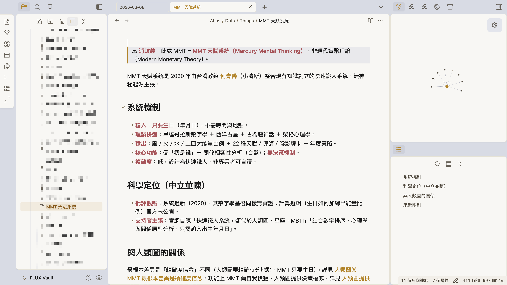

BLOCK 2 → BLOCK 3接你的知識
工具都接上了 ——
那 你的判斷 呢？
那 你的判斷 呢？
B3 · 50 MIN
上次建好 vault 的 骨架、今天把你的 研究和判斷 裝進去 —— 存成永久、半年後找得回來。
1 / 25
BLOCK 2 → BLOCK 3 · BRIDGE
BLOCK 3 · 知識管理這站 2 件事
這一站 —— 2 件事。
知識管理這 50 分鐘，你會帶走 ——
01
建一個能用半年、一年、三年的 知識庫
不是暫存、不會被歸檔 —— 你研究過的，半年後還調得出來。
02
教 Claude 自動幫你維護 它
你說一句、它自動建卡、連結、歸檔 —— 你不用記任何語法。
這站結束、你不只「有」一個知識庫 —— 它會 自己長大。
2 / 25
BLOCK 3 · 這站 2 件事
BLOCK 3 · 知識管理你查過的東西散在哪
你上個月研究的東西 ——
5 秒找得到嗎？
5 秒找得到嗎？
朋友
你之前不是研究過 MMT 跟人類圖？那份比較傳我參考。
你
等我找一下 —— 翻 Daily Note（三個月前歸檔了）、翻 Email / LINE（忘了關鍵字）…
欸…我之前 不是研究過嗎？那條原則到底在哪…
不是你研究得不夠 —— 是你研究的東西 沒有家。
找不到、只好重新查一次 —— 你研究過的，等於沒研究。
3 / 25
BLOCK 3 · 知識管理 · HOOK
BLOCK 3 · 知識管理全部暫時
你看過的資料夾 ——
全部暫時。
全部暫時。
Cockpit/Daily
每月歸檔
— 暫時 —
Efforts/Projects
結案搬走
— 暫時 —
Efforts/Areas
累積變雜
— 暫時 —
Inbox
定期清空
— 暫時 —
沒一個地方、是設計來放 半年後還要用 的東西。
那「半年後還要用」的東西 —— 到底放哪？
4 / 25
BLOCK 3 · 知識管理 · 全部暫時
BLOCK 3 · 知識管理第五個資料夾
第五個資料夾 —— Atlas
永久 · ∞
規則 01
進來的東西 —— 不歸檔、不清空、不搬走。半年、一年、三年。
規則 02
放的不是 事件、是 原則。事件會過期、原則不會。
5 / 25
BLOCK 3 · 知識管理 · Atlas 出場
BLOCK 3 · 知識管理同一個視窗 · 這次亮 Atlas
上次這個視窗你開過 ——
今天亮的是 Atlas。
今天亮的是 Atlas。
FLUX — Visual Studio Code
FLUX-STANDARD-STUDIO-A
📁 Inbox
📁 Cockpit
📁 Efforts
📁 Calendar
📂 Atlas
📁 Sources 完整來源
📁 Dots 原子卡
📁 Maps 主題索引
📄 log.md 歸檔記帳
📁 Guides
📁 Templates
📄 CLAUDE.md
5
第五個資料夾
前四個都暫時 —— 只有 Atlas 永久
上次亮的是 Cockpit —— 你的工作。
今天亮的是 Atlas —— 你的知識。
今天亮的是 Atlas —— 你的知識。
點開 Atlas —— 裡面 三層：Sources / Dots / Maps。下一頁細看。
同一個 vault、同一個視窗 —— 工作跟知識、住在一起。
6 / 25
BLOCK 3 · 知識管理 · Atlas 在 Vault
BLOCK 3 · 動手打開你的 Atlas · 3 MIN
動手 —— 打開你自己的 Atlas。
FLUX — VS Code
📁 Inbox
📁 Cockpit
📂 Atlas
📁 Sources
📂 Dots
📂 People
📄 Nick Milo.md
📄 Brian Moran.md
📁 Things
📄 Obsidian.md
📁 Statements
📁 Quotes · Questions
📁 Maps
📄 log.md
---
collection: [[People]]
up: [[PKM MOC]]
related: [[LYT 連結你的思考]]
---
# Nick Milo
LYT（Linking Your Thinking）創始人，
把 MOC 帶進 Obsidian。
## 為什麼記它
Atlas 這套結構就是從他的方法來的。
1
點開 Atlas → 認出三層 Sources / Dots / Maps
2
點開一張卡（如 Nick Milo）→ 看 frontmatter + 內文
現在是範例 → 等下 CAPSTONE 親手加自己的。
03:00
7 / 25
BLOCK 3 · 動手 · 打開你的 Atlas · 3 MIN
BLOCK 3 · 知識管理它的血統
Atlas 不是我發明的 ——
是 卡片盒筆記法。
是 卡片盒筆記法。

《卡片盒筆記》
Sönke Ahrens · Zettelkasten
社會學家 Luhmann 用一盒卡片、一生寫了 70 本書 + 400 篇論文。
· 核心：一卡一概念、卡片互相連結 → 知識網路
· Atlas = 它的 Obsidian 實現（LYT · Nick Milo）
你等下建的每一張 Dot —— 就是一張 Zettel（卡片）。
8 / 25
BLOCK 3 · 知識管理 · 卡片盒筆記法
BLOCK 3知識管理
預設是 ——
資訊會消失。
除非它進 Atlas。
資訊會消失。
除非它進 Atlas。
9 / 25
BLOCK 3 · 知識管理
BLOCK 3 · 知識管理Atlas 三層
Atlas 是 三層 結構
TIER 01
Sources
完整原始來源（7 類）
比喻：書櫃 —— 完整的書、文章、影片。一個來源一個檔。
TIER 02
Dots
原子知識卡（5 類）
比喻：你在書上畫的重點 —— 一張卡一個概念。
TIER 03
Maps
MOC 主題索引
比喻：你整理的書單 —— 同主題卡 3+ 張就建一張。
還有一個 Atlas/log.md —— 每次歸檔記一筆帳，半年後翻 log 看自己學了什麼。
10 / 25
BLOCK 3 · 知識管理 · Atlas 三層
BLOCK 3 · 知識管理Sources 7 類
Sources —— 7 類來源
一個原始來源放一個檔。檔名格式 YYYY-MM-DD-主題.md
Articles/
網路文章、Blog
Books/
書
Videos/
YouTube、線上課
Podcasts/
Podcast
Courses/
課程
Talks/
演講、研討會
Papers/
論文
⋯
不夠用再加
一個來源 = 一個檔。從它拆出的卡 → 放 Dots。
11 / 25
BLOCK 3 · 知識管理 · Sources 7 類
BLOCK 3 · 知識管理Dots 5 類
Dots —— 5 類原子卡
從 Source 拆出的原子知識卡、一張卡一個概念。下面是「MMT vs 人類圖」那份研究拆出的卡：
Statements
一句可複用的結論
人類圖要精確時間 / MMT 只要生日
Things
一個名詞 / 概念
人類圖 Authority（決策機制）
People
人物 / 窗口
何青馨（小清新 · MMT 創辦人）
Questions
思考種子 · 例：沒科學根據，為什麼還是覺得準？
Quotes
別人說的話 · 例：「人類圖不是信仰、是地圖」
12 / 25
BLOCK 3 · 知識管理 · Dots 5 類
BLOCK 3 · 知識管理一卡一概念
想加「及／和／與」
= 該拆兩張。
= 該拆兩張。
① 一卡一概念
② 自足 —— 單獨看得懂
③ 可複用 —— 多主題能引用
④ 標題就是 結論
能用一句話說清 = 夠原子。
❌ 一張卡塞兩件事
人類圖是通靈創立 及 被列為偽科學.md
↓ 拆兩張
✅
人類圖由 Ra Uru Hu 通靈創立.md
一卡一概念
✅
人類圖被維基列為偽科學.md
一卡一概念
13 / 25
BLOCK 3 · 知識管理 · 原子化
BLOCK 3 · 知識管理一張卡長什麼樣
一張卡 長什麼樣？
檔名 = 一句結論
人類圖要精確時間MMT只要生日.md
一張卡的結構
檔名 = 標題（一句結論）
frontmatter = 標籤、連結
內文 = 細節
frontmatter = 標籤、連結
內文 = 細節
先不用記語法 —— Claude 自動填。
frontmatter 範例
---
collection: Statements
up: "[[性格分析系統 MOC]]"
related:
- "[[人類圖 Authority 決策機制]]"
created: 2026-06-06
says: "人類圖要精確時間、MMT 只要生日"
---
人類圖要出生年月日時分＋地點、MMT 只要生日就能算…
14 / 25
BLOCK 3 · 知識管理 · 一張卡
BLOCK 3 · 知識管理這套結構 · 誰整理
以前你整理 ——
現在 AI 整理。
現在 AI 整理。
以前 · 靠人整理
筆記愈多 —— 愈難找、愈難管
分類、連結、拆卡 全自己來
半年沒整理 —— 就爛掉
你變成全職圖書管理員
→
現在 · AI 管
你只丟原始資料 + 說一聲
AI 建來源、拆原子卡、自動連結
結構 自己長 —— 不用你維護
你只下指令
你不用變圖書管理員 —— 你只要會說兩個暗號。
15 / 25
BLOCK 3 · 知識管理 · 以前 vs 現在
BLOCK 3知識怎麼流進 Atlas
知識流進 Atlas ——
兩個暗號。
兩個暗號。
[研究]
去網路 抓新的
[歸檔]
把來源 拆成卡
今天兩個都動手 —— 先研究、再歸檔。
16 / 25
BLOCK 3 · 兩個暗號
BLOCK 3 · 暗號一研究 vs Google
[研究] 跟 Google 差 3 件事
差別 01
先查內部
Google 從零開始。
[研究] 先告訴你「你已經有什麼」、再補沒有的。
[研究] 先告訴你「你已經有什麼」、再補沒有的。
差別 02
比對舊卡
🆕 新知識
🔄 跟舊卡重疊
⚠️ 跟舊卡衝突
🔄 跟舊卡重疊
⚠️ 跟舊卡衝突
差別 03
直接存起來
整理成一份、存得起來（Inbox 或 Atlas）——
不是丟你 10 個分頁、看完就忘。
不是丟你 10 個分頁、看完就忘。
17 / 25
BLOCK 3 · 暗號一 · 研究 vs Google
BLOCK 3 · 暗號一[研究] · 去網路抓
暗號一 [研究] ——
讓 Claude 幫你查。
讓 Claude 幫你查。
DEMO · 輸入這一行
> [研究] MMT 和 人類圖 有什麼不同 ? 完成研究之後把存到 Inbox
Claude 會 ——
1 先查你 Atlas 裡有沒有
2 上網補你還沒有的
3 整理出重點摘要給你看（🆕 新 / 🔄 重疊 / ⚠️ 衝突）
4 看完摘要 → 完整報告自動寫進 Inbox/
跟 Google 差在：它 讀完幫你整理、還能 存起來 —— 不是丟你 10 個分頁、看完就忘。
現在：複製一行 → 貼 → enter —— 看到它開始查就成功了。等大家都跑起來、我們繼續看下一頁。
03:00
18 / 25
BLOCK 3 · 暗號一 · [研究] demo
BLOCK 3 · 產出 ①research 進 Inbox
你的 research —— 躺在 Inbox 裡。
Inbox / mmt-vs-人類圖-差異對比研究.md
# MMT 天賦系統 vs 人類圖 · 差異對比研究
## 重點摘要
· 最根本差異 = 精確度信念：人類圖要出生時分＋地點、MMT 只要生日
· 人類圖有決策機制（Authority）、MMT 只給自我標籤
· 科學效度兩者皆無 —— 人類圖被列偽科學、MMT 太新無研究
· 人類圖有決策機制（Authority）、MMT 只給自我標籤
· 科學效度兩者皆無 —— 人類圖被列偽科學、MMT 太新無研究
## 定位對照
人類圖
MMT
輸入
出生時分＋地點
只要生日
輸出
Bodygraph 9 中心
四大能量＋22 牌
核心功能
Authority 決策
自我標籤
## 來源 · Claude 查到的出處清單
19 / 25
BLOCK 3 · 產出 ① · research → Inbox
BLOCK 3 · 暗號二[歸檔] · 拆成永久卡
暗號二 [歸檔] —— 那坨 research 拆成卡。
> [歸檔] 我剛剛存到 Inbox 的研究
↳ 不用打檔名 —— Claude 自動抓 Inbox 最新那份（例：mmt-vs-人類圖-差異對比研究.md）
複製這行 → 貼進你的 Claude，它就自動：建 Source → 拆 Dots → 連結 → 存進 Atlas（永久）
03:00
拆出 6 張永久卡 · 掛在 [[性格分析系統 MOC]]
Statement
人類圖要精確出生時分＋地點、MMT 只要生日
Statement
人類圖給決策機制（Authority）、MMT 只給自我標籤
Statement
科學效度兩者皆無、但批評密度不同
Thing
人類圖 Bodygraph（9 能量中心）
Thing
MMT 四大能量＋22 牌卡
People
何青馨（小清新 · MMT 創辦人）
20 / 25
BLOCK 3 · 暗號二 · [歸檔] → 6 張卡
BLOCK 3 · 產出 ②打開一張看裡面
打開其中一張 —— 裡面長這樣。
Statements
人類圖要精確時間 · MMT 只要生日
---
up: [[性格分析系統 MOC]]
collection: [[Statements]]
related: [[人類圖 Authority 決策機制]] …+3
source: [[MMT vs 人類圖…]]
created: 2026-06-06
---
says · 人類圖要出生時分＋地點（差幾分鐘就變）、MMT 只要生日 —— 兩套系統對「命運能多精確被讀出」假設完全不同。
維度
人類圖
MMT
輸入資料
出生時分＋地點
只要生日
輸出
Bodygraph 9 中心
四大能量＋22 牌
核心功能
Authority 決策
自我標籤
複雜度
高 · 需解讀師
低 · 可自讀
## 核心啟示 門檻差異其實是 設計哲學差異 —— 要多精確的輸入，反映你信「命運能被多精確讀出」。
## References → [[MMT vs 人類圖 差異對比研究]]
一張卡 = 一個結論 + 證據 + 可複用啟示 —— 半年後打開還看得懂。
21 / 25
BLOCK 3 · 產出 ② · 打開一張卡
BLOCK 3 · 知識管理飛輪
飛輪 —— Atlas 越用越聰明
每跑一次 [研究] / [歸檔] ——
· Atlas 多幾張卡
· 它更懂你已經有什麼
· 下次研究先看「你已經有的」
· 不重複造輪子
例：比較過 人類圖 → 下次比 MBTI / 九型人格，Claude 先說「你已經有性格分析框架了」。
Atlas 越用越聰明 —— 不是越用越雜。
22 / 25
BLOCK 3 · 知識管理 · 飛輪
BLOCK 3 · CAPSTONE換你自己的題目
現在 —— 換你 自己的題目。
剛剛 demo 跑的是 MMT vs 人類圖 —— 換一個你真正想搞懂的題目（你的利基、你在用的工具、你卡關的選擇都行），整套自己跑一遍。
① 選一個你
自己的題目
自己的題目
→
② [研究]
跑透它
跑透它
→
③ [歸檔]
進 Atlas
進 Atlas
半年後 —— 這份研究 還在、還調得回來。
23 / 25
BLOCK 3 · CAPSTONE · 換你自己的題目
BLOCK 3 · CAPSTONE跑研究 → 下課 10 分 → 回來分享
跑你的 [研究] —— 下課 10 分，回來分享。
1 打 [研究] + 你的題目 → enter，它在背景跑
2 ☕ 下課 10 分鐘 —— 研究背景跑、回來就有
3 回來 [歸檔] → 一位把畫面投出來分享
10:00
沒想法？挑一個、改成你的
內容我這個利基的創作者都在哪些平台、發文頻率、怎麼變現
工具剪輯軟體 CapCut vs Premiere vs DaVinci，適合誰
變現訂閱 / 業配 / 課程 / 會員，哪種適合我的受眾
選題我想切入的主題，前 5 個聲量最大的人在講什麼
人設MBTI / 人類圖 / 九型，哪個拿來做內容人設最好用
回來 · 一位投畫面
帶大家看 ① 你的題目 ② [研究] 摘要 ③ Obsidian 的卡 —— 看別人怎麼問，你會想到自己還能查什麼。
24 / 25
BLOCK 3 · CAPSTONE · 跑研究 → 下課 → 分享
BLOCK 3 · CAPSTONE打開 Obsidian 看成果
歸檔完 —— 打開 Obsidian 看。
跑完 [歸檔] → 研究拆成永久卡進 Atlas/Dots/ → 打開 Obsidian 就看得到 ↓

你研究的 —— 現在是 Obsidian 裡 查得回來、互相連結 的卡。
25 / 25
BLOCK 3 · CAPSTONE · 打開 Obsidian